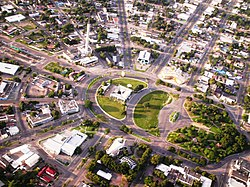

Roraima, o estado menos populoso do Brasil, possui cerca de 652 mil habitantes e é conhecido por sua alta densidade indígena. Sua capital, Boa Vista, concentra uma grande parte da população estadual, que tem crescido recentemente devido à migração de venezuelanos. Uma curiosidade é que Roraima é considerada o estado com a maior proporção de indígenas do país, com diversas etnias e territórios indígenas, como a Terra Yanomami.
